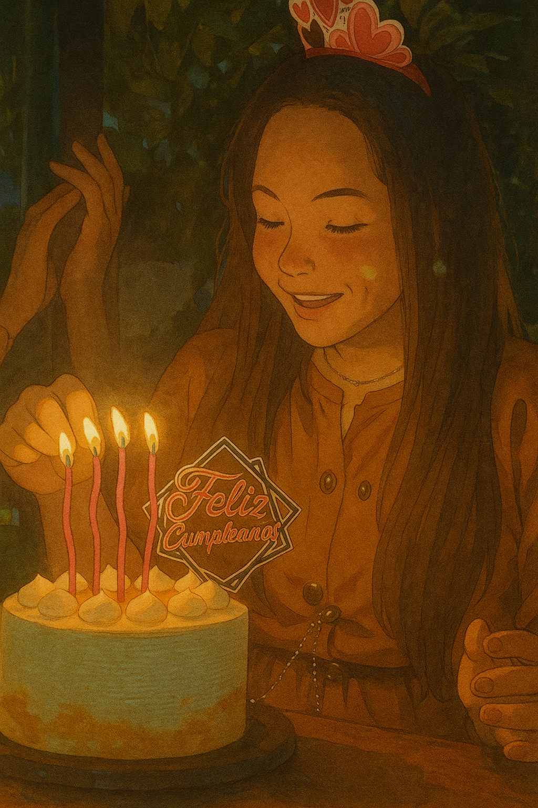
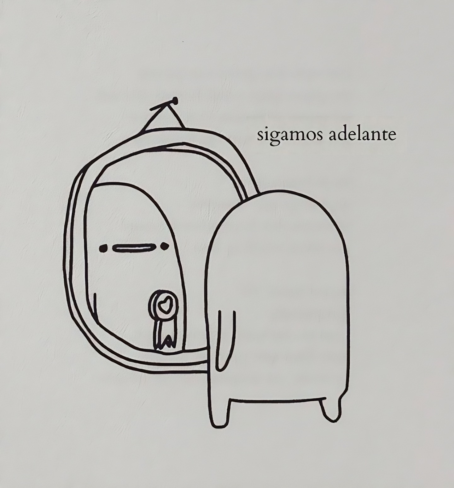

...
Giovanna Andrea Gómez Bernal
Este espacio fue preparado con mucho cariño y guarda algo verdaderamente especial, único y destinado solo para ti.
---- Ese bendito día ----

A partir de hoy, trataré de seguir adelante, ahora que ya no me encontraré con tu mirada. Seguramente, se vendrá una gran cantidad de días que dejaré de reír por no tenerte en este espacio de manera tangible. Todo fue muy diferente. Los abrazos, las sonrisas y las palabras únicas.... Nuevamente te lo digo, has sido de las mejores "cosas" improvisadas que han llegado en mi vida, y, haya sido real o no, te lo agradezco, porque en todo este lapso (de tiempo) fui muy feliz.
Perdona todo lo malo, soy humano y también me equivoco.
No me quiero alargar mucho. Pero la verdad, solo espero que lleguen pronto más días felices a mi vida (y espero no me malinterpretes)…
De mi parte, deseo que la vida ponga en tu camino todo lo que realmente te haga feliz, que tus pasos te guíen a donde quieras llegar. Que cuando tropieces, tus alas se abran y alces nuevamente el vuelo. Que tus brazos sirvan para consolar a quienes quieres de verdad y sean un refugio de consuelo donde puedan descansar y sentirse a salvo. Que tus lágrimas se transformen en sonrisas y te des cuenta de que lo malo no dura siempre y que la vida, a pesar de todo es bella. Así, siempre tendrás razones para seguir adelante y no rendirte jamás. Recuerda que hasta la luna pasa por fases para volver a estar llena...
Hoy quiero decirte "Gracias"... Gracias por haber aparecido cuando lo hiciste. Gracias por verme y disfrutar en realidad de como soy. Gracias por darme tu atención y todo tu apoyo. Gracias por tu tiempo. ¡Gracias por absolutamente todo! ... porque aunque no fue mucho el tiempo, para mí, fue un para siempre.
De lo malo que tal vez pienses que en algún momento pudiste "aportar", no fue malo realmente. Sin rencores, porque un día fuiste mi persona favorita...
¡Todos rompimos nuestras propias reglas por alguien y no todas las historias necesitan un cierre perfecto; algunas solo deben ser vividas!
Felicidades por llegar hasta aquí, felicidades por este gran logro, felicidades porque lo que se viene va a ser realmente bueno para ti y mereces celebrarlo… ¡Sabes más que nadie que te lo mereces!
Este es un pensamiento que espero toque suavemente tu corazón y guarde con cariño todo lo bueno que pude sembrar en él.
¡Eres la justa medida de todo!
---- Ese recuerdo ----
----- Ese detalle -----

----- Tus 24 -----

Algunas cosas para recordar a tus 24 años:
• Perdonarte siempre será el acto más puro de amor propio.
• A veces, huir no está mal... Es solo otra forma de sanar.
• Tener el corazón roto permite que entre nuevamente la luz en él.
• Lo que tanto buscas te encontrará cuando menos lo esperes.
• Siempre hay y habrá tiempo, solo espera y ten paciencia...
• Tu niña interior sigue ahí, jugando y soñando, no la reprimas...
• Aunque a veces parece no quedar nada, la esperanza siempre está ahí, esperando.
¡Feliz cumpleaños Gómez Bernal!
----- Tu logro -----

"Lo que significa crecer..."
"Ayer" estabas en primer semestre, aprendiendo a encontrar los salones, (supongo que) con miedo de hablar en clase… Y hoy "te pones" una toga para decirle adiós a la universidad.
Hoy tienes 24 años y es posible que te hayan dicho que el mundo te espera.
Es posible que pienses que no estás lista, es normal, nadie sabe literal nada al salir de la Universidad. Así que no tengas miedo de sentirlo.
Tómate un momento para respirar y para entender (si lo sientes necesario) lo que significa cerrar esta etapa. Esta etapa que es primordial y que te da un paso para lograr y conseguir grandes cosas.
Aunque pueda que te duela… Crecer también es parte del camino.
De mi parte y por el momento, solo te puedo decir:
¡Ten ganas...! Ganas de crecer. Ganas de aprender. Ganas de vivir.
¡Te lo mereces todo!
¡Felicidades, Gómez Bernal!
----- Hoy es septiembre -----
Creo que este año he derramado más lágrimas que nunca. He llorado sintiendo que, con cada una, se escapaba un pedazo de mi vida. He intentado vaciar todo lo que llevaba guardado, pero siempre quedaba algo dentro… Un eco que insistía en quedarse.
He llorado con fuerza, en silencio, en soledad y también acompañado. He llorado con un dolor profundo, preguntándome una y otra vez: “¿Por qué?”, deseando regresar a esos días donde la felicidad se sentía real. He sentido rabia, impotencia, tristeza, vacío, soledad.
Me he abrazado fuerte a mí mismo, buscando consuelo en mis propios brazos. Me he quedado dormido con las lágrimas resbalando por mi rostro… Esas que saben a corazón roto. Y aunque he llorado tanto, cada lágrima me ha dejado un poco más fuerte, un poco más yo.
Ya no quiero tener esos bajones que aprietan demasiado el corazón. A veces, tienes que tomar una decisión que te romperá por dentro, pero que le dará paz a tu alma.
Pude haberte llamado. Pero no. Mi silencio también es una forma de respeto al amor que tuvimos… Y a la decisión que tomaste al caminar con alguien más. Dale el valor que se merece, parece ser una buena persona...
Deseo que encuentres todo aquello que sueñas y anhelas y nunca olvides lo mucho que has luchado para llegar hasta aquí.
Gracias por estar, por los momentos compartidos y por el espacio que ocupaste en mi historia. Aunque el camino cambie, mi agradecimiento y cariño siempre permanecerá y "lo sabes perfectamente".
(Del 30/08)
... no volvieron ...